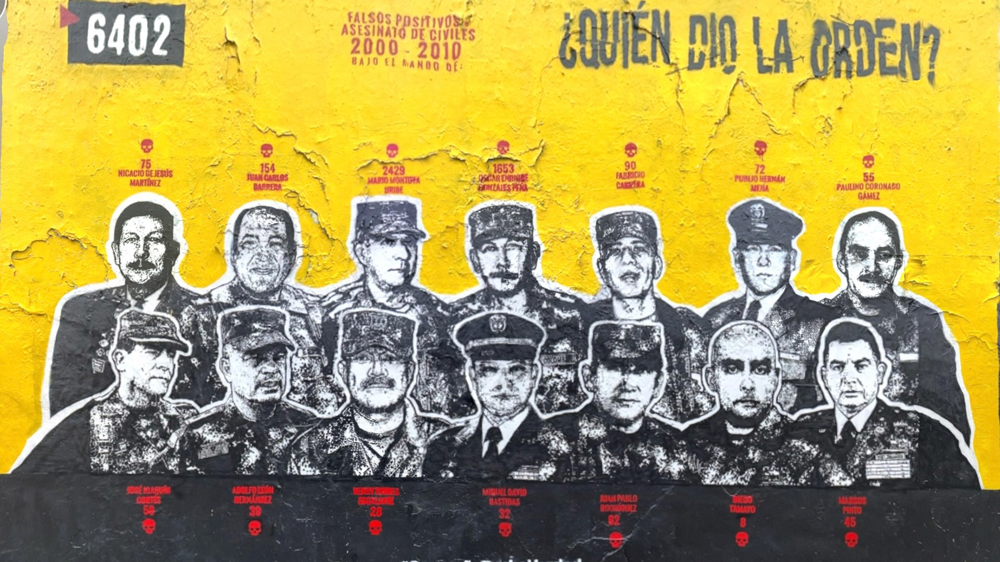
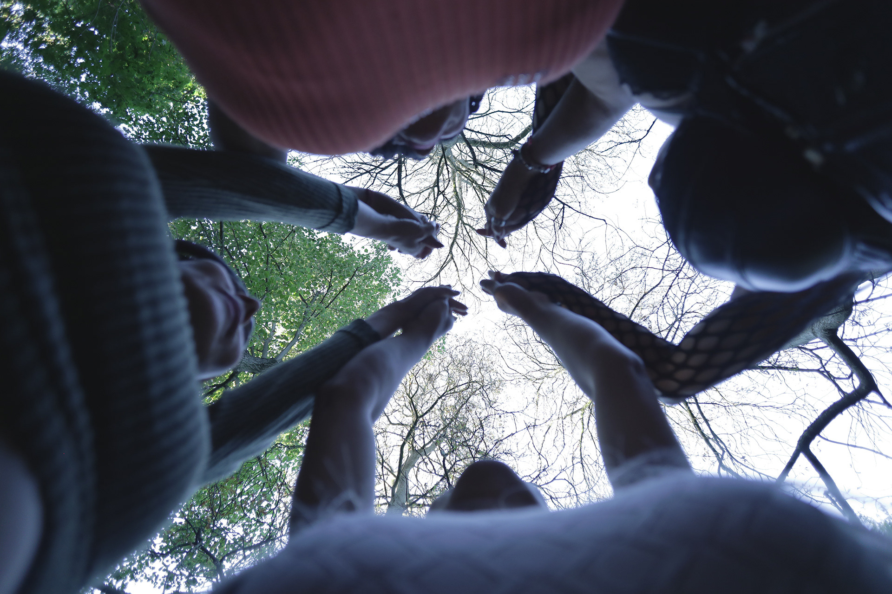
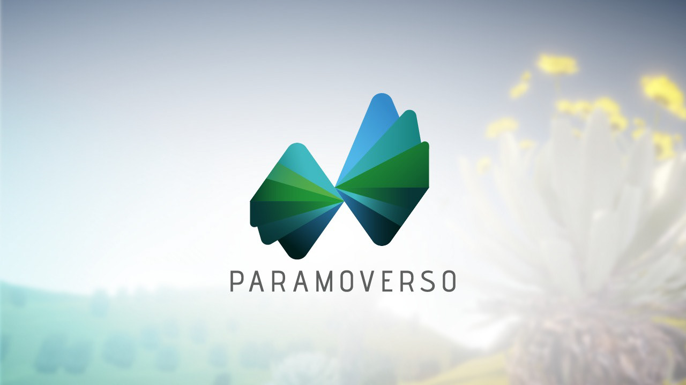
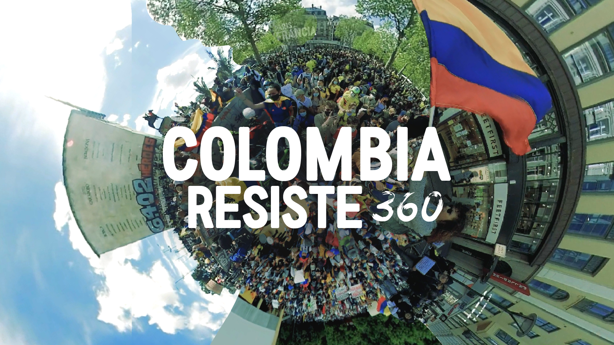
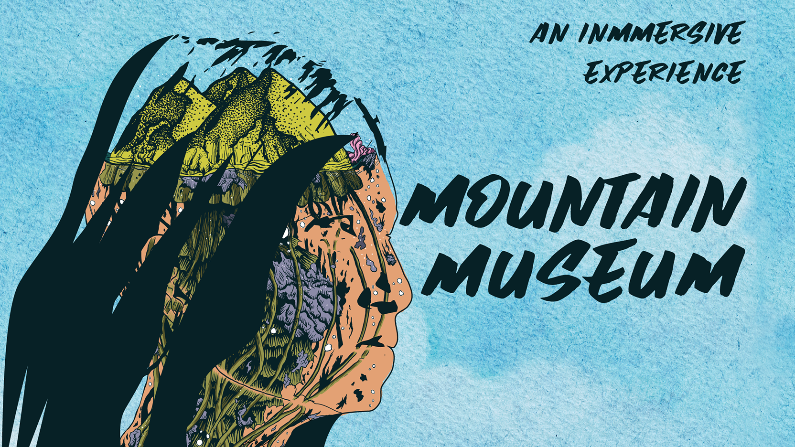

Projects
Selected projectsArchive / 2018—2026
Filter by
Showing 8 projects
01
¿Quién dio la orden?
View project ↗
02
Sexilio
View project ↗
03
Paramoverso
View project ↗
04
El Camino Cimarrón
View project ↗
05
Colombia Resiste 360
View project ↗
06
Continuum VR
View project ↗
07
Les Danses Extatiques
View project ↗
08
Mountain Museum
View project ↗